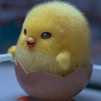
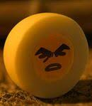

How does Gudetama: An Eggcellent Adventure make its plot even more exciting?? With the presence of these 3 characters, they are given a message to the audience to aspire and do what you wish to do to achieve your ambitions in life!
| Character | Description |
|---|---|
|

Shakipiyo |
Shakipiyo is a duck who sees things positively,
|
|
Gudetama is a depressed egg and the said "brother" of Gudetama
|
|
|

Hard boiled Egg |
Hard Boiled Egg is one of the eggs that Gudetama and Shakipiyo became friends with
|